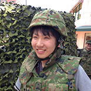
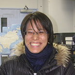
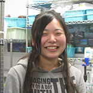
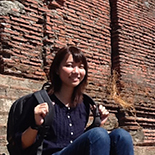
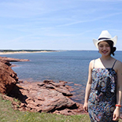
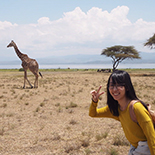

|
Tatsuki Toda |
| Dean, graduate school of engineering & Professor |

|
Masatoshi Kishi |
| Department of Science and Engineering, Assistant professor | |
| Ph.D in Engineering, Soka University, Japan | |
| My research focuses on microalgal cultivation, ranging from wastewater treatment, nutrients extraction and purification from waste resources, and to bioreactor development. I believe in the power of this small photosynthetic organisms to be the game changer of the global issues. |

|
Tomoko Yoshiki |
| Office administrator | |
| Ph. D. in Engineering, Soka University, Japan. | |
| I came back to Soka Univ. in last April as an office administrator. My past research topics were hydrostatic pressure effect on zooplankton and time series variation of lower trophic levels in western North Pacific. I like gardening, climbing mountain and traveling. I want to make a biotope by using Japanese killifish in my garden with my kids next. |

|
Noriaki Natori |
| Ph.D course student, Department of Environmental Engineering for Symbiosis, Graduate School of Engineering | |
| 2015 MS in Department of Engineering, Soka University, Japan. 2015 April to current Ph. D. in Engineering, Soka University, Japan. | |
| I am studying the marine crustacean organisms, especially small larvae of copepods which is named "Nauplius". The study is very interesting although it is really hard. I will tackle difficult problems and acquire a scientific consideration. |

|
Minamo Hirahara |
| Ph.D course student, Department of Environmental Engineering for Symbiosis, Graduate School of Engineering | |
| 2015 MS in Department of Engineering, Soka University, Japan. 2015 April to current Ph. D. in Engineering, Soka University, Japan. | |
| My research topic is "The biological responses of marine zooplankton". I have been to some places, whether in or outside Japan and have met many people through my research. My future dream has not been decided yet, but, I wanna be a woman who works for disadvantaged people and society using my research. |

|
Youta Sugai |
| Ph.D course student, Department of Environmental Engineering for Symbiosis, Graduate School of Engineering | |
| 2016 MS in Department of Engineering, Soka University, Japan. 2017 April to current Ph. D. in Engineering, Soka University, Japan. | |
| I started my research in this lab in my sophomore year. My research topic is "the Role of Microbial Communities in the Sea Surface Microlayer (SML)", and I am generally interested in the microbial loop in marine ecosystems. I enjoy field investigation and want to go to the ends of the Earth through my research activities. I go on to a Ph.D. course and want to work in a laboratory or international organization in the future. Recently, I love to eat sweets after finishing my work! E-mail address: youtasugai@soka.gr.jp |

|
Yoshiki Takayama |
| Ph.D course student, Department of Environmental Engineering for Symbiosis, Graduate School of Engineering | |
| 2017 MS in Department of Engineering, Soka University, Japan. 2017 April to current Ph. D. in Engineering, Soka University, Japan. | |
| I belonged arts course in high school days and I graduated from department of education of Soka University. However I decided to become member of this laboratory! I am able to study about zooplankton in Sagami Bay because of help of family and friends. My hobby is playing volleyball, riding motorbike (my motorbike is Gsx400s kanana of Suzuki), fishing, and outdoor activities. I will I do the study that is helpful for the person. I will always keep smile, enjoy job, and become tough man! |

|
Masahiro Ootake |
| Ph.D course student, Department of Environmental Engineering for Symbiosis, Graduate School of Engineering | |
| 2017 MS in Department of Engineering, Soka University, Japan. 2017 April to current Ph. D. in Engineering, Soka University, Japan. | |
| I play a part in restoration project of seaweed bed in Goto islands in Nagasaki prefecture. My hobby is playing the piano, watching soccer game and movie. I will contribute to create new industry in local area in order to stop declining population. |

|
Toshimitsu Kodera |
| Ph.D course student, Department of Environmental Engineering for Symbiosis, Graduate School of Engineering | |
| 2017 MS in Department of Engineering, Soka University, Japan. 2017 April to current Ph. D. in Engineering, Soka University, Japan. | |
| My study is about simulations removal of organic carbon and nitrate from wastewater by granular sludge, using UASB reactor. I love to dance and watch movies, and searching random funny videos from youtube. I'd like to have a job that can help developing countries to have sustainable development. |

|
Anupreet Kaur |
| Ph.D course student, Department of Environmental Engineering for Symbiosis, Graduate School of Engineering | |
| 2016 MS in Department of Environmental Sciences, JAwaharlal Nehru University, India. 2017 April to current Ph. D. in Engineering, Soka University, Japan. | |
| Hi ! My name is Anupreet and I am from India.I am pursuing PhD here and consider myself so lucky to be always surrounded by such an amazing and hardworking people in this laboratory. I will be researching on micro algae and really looking forward to it. Personally, I like travelling and I am a big time foodie. I wish to work for the betterment of the society with the help of my research background and hope to achieve this as soon as possible with all my dedication. |

|
Maria Cecilia D.Salangsang |
| Ph.D course student, Department of Environmental Engineering for Symbiosis, Graduate School of Engineering | |
| MAEd - Physics, Bulacan State University BS Chemical Engineering, Technological Institute of the Philippines Faculty member - University of the East - Caloocan | |
| I would like to pursue a study on the seasonal variation of chemical properties and anaerobic digestibility of landfill leachate in Metro Manila. I am confident that from the lessons, equipping and experiences I will gain here at Soka University I will be able to contribute to relevant researches and publications that will help mitigate environmental concerns especially focusing on solid waste and wastewater treatment. My hobbies include cross-stitching, reading and watching films. I have two daughters, Kim and Janine. Back in the Philippines, during weekend we love to spend time watching TV series together while pigging out on chips. For now, we just enjoy exchanging wacky pictures and emails. |

|
Xia Yuanjun |
| Master course student, Department of Environmental Engineering for Symbiosis, Graduate School of Engineering | |
| Hello, my name is Xia Yuanjun, I am from China. Now, I am master one student. Enter the toda laboratory in April. My major is recovery with algae. Hobbies are travel. In the process of travel that tasting delicious food and experience different culture. I would like to jobs connected with the environment. I hope my life and learning are smooth and memorable in Japan. |

|
Muthumi Sekine |
| Master course student, Department of Environmental Engineering for Symbiosis, Faculty of engineering | |
| My research topic is integrated biological treatment process of wastewater and H2S-gas from anaerobic digestion. I love reading books, and enjoying a leisurely meal. In my future, I want to contribute to construction of society where nature and people live together. |

|
Masaaki Hujiwara |
| Master course student, Department of Environmental Engineering for Symbiosis, Faculty of engineering | |
| My hometown is Miyoshi, Hiroshima, where is covered with green. My favorite things are eating, learning to knowledge in various matters, and reading picture books. I like alcohol, but I have a low tolerance. From elementary school to high school, I had belonged to baseball team. My dream is improving the environmental problems, by changing matters which has negative influence on the environment to valuable ones for human's society. |
|  | Rikuya Kurita |
| Master course student, Department of Environmental Engineering for Symbiosis, Faculty of engineering | |
| I am from Adachi-ku Tokyo. I belong to laboratory of restoration ecology from April, 2015. My club activities belonged to an orchestra as trombone player and the ocean study exploration department of the university. My hobbies are classical music appreciation watching movies, scuba diving, and playing mah-jong. I love the red snapper, but I hate the peppers. My favorite movie is Jurassic Park. My favorite limit is All Honors. I want to concern water environment in the future. |
|  | Hidemi Onouchi |
| Master course student, Department of Environmental Engineering for Symbiosis, Faculty of engineering | |
| My hobby is a playing a musical instrument (bassoon), appreciating music, paper-cutting, bird-watching, astronomical observation and etc. I'm looking for the creatures such as a bird or cat for a change when I going out. |
|  | Yukina Yamada |
| Master course student, Department of Environmental Engineering for Symbiosis, Faculty of engineering | |
| I study that algae cultivate for capture CO2 from biogas. My favorite artist is UVERworld and I go to their concert at least once a year. In the future, I want to be a person who can suggest an approach to solving environmental issues from every perspective. |

|
Hideyuki Taira |
| Master course student, Department of Environmental Engineering for Symbiosis, Faculty of engineering | |
| I graduated economics major of correspondence course from Soka university and entered again as master course student through research student. My topic is effective recovery of nutrients from anaerobically digested sludge for cultivating microalgae. |

|
Toshi Kikuchi |
| Master course student, Department of Environmental Engineering for Symbiosis, Faculty of engineering | |
| I am studying in the master course of graduate school, and also working for the company. I would like to study the ecology of oysters. I want to study more than now so that I can do research that will contribute to society. |

|
Honami Suzuki |
| Master course student, Department of Environmental Engineering for Symbiosis, Faculty of engineering | |
| My study is anaerobic digestion. My hometown is Setagaya in Tokyo. I like Chinese food (especially sweet-and-sour pork) and spicy food. I like reading books and collecting ZAQ goods. I also like talking with regular customers who come to my family's Japanese noodle restaurant. |

|
Yumi Kadoishi |
| Master course student, Department of Environmental Engineering for Symbiosis, Faculty of engineering | |
| I'm Yumi. I met zooplankton in undergraduate class. I was impressed by the vitality of zooplankton. I am studying zooplankton now. My dream is teacher. I want to teach my students the importance of life through my study. |

|
Gen Satoyoshi |
| Master course student, Department of Environmental Engineering for Symbiosis, Faculty of engineering | |
| The research theme is simultaneous biological removal of carbon, sulfur and nitrogen.I like watching movies, reading and loving animals in my free time. Recently Pota which is my pet and leopard gecko healed me. |

|
Pranshu Bhatia |
| Master course student, Department of Environmental Engineering for Symbiosis, Faculty of engineering | |
| Hi My name is Pranshu Bhatia and I am a first year master's student at Soka University in the faculty of Engineering . The topics in which I am interested are Waster Water Treatment and Production of high value Microalgae . I want to work in the field of environment to make this environment a better place to live in for all the living beings ( Humans , Animals and Plants ). I am really determined to work harder under my professor and my seniors. My hobbies are to do gardening , playing guitar and singing songs , watch movies and to hang out with friends. |
|  | Maco Tagawa |
| under graduate student, Department of Environmental Engineering for Symbiosis, Faculty of engineering | |
| Hi! My name is Maco. I am from Hiroshima. I stayed for four month in the Philippines. It was aiming to improve my pronunciation of English. I will strain for improving my English still. My future dream is working for people across national borders and making many friends there. I also visited Ethiopia this year. I like sea. I like music. Nice to meet you. |
|  | saki Tachihana |
| under graduate student, Department of Environmental Engineering for Symbiosis, Faculty of engineering | |
| Hi. My name is saki. I love listening to foreign music and doing exercise. I studied abroad to Canada for 8 months and after that I joined this lab. My research is about mass cultivation of marine diatom. In the future I'd like to be a wonderful woman and enjoy my life. |

|
Midori Goto |
| under graduate student, Department of Environmental Engineering for Symbiosis, Faculty of engineering | |
| Hello! I'm Midori. My research theme is the cultivation of marine microalgae.I spent nearly a third of my student life in Malaysia. I like cooking and drawing.If I have a chance, I want to try sea fishing, rock climbing, and skiing.In the future, I'd like to contribute to the compatibility of environmental conservation and economic growth in developing countries. |

|
Tsubasa Yamamoto |
| under graduate student, Department of Environmental Engineering for Symbiosis, Faculty of engineering | |
| I spend long time to commute to university by train from Chiba.I like anime and comic, I'm typical a man in the science field.I was in the biology club and swimming club in high school, like living thing and swimming.Tha's why I study about marine zooplankton.I want to make something I like into my job in the future.I'm glad to make friends who study in same field recently. |
|  | Mari Yasuda |
| under graduate student, Department of Environmental Engineering for Symbiosis, Faculty of engineering | |
| I explore the useful strain of microalgae which is isolated from seawater in coastal waters of Goto Islands, Nagasaki Islands. My hobby is to listen Western music and watch the video of dance on the internet. I had done ballet dance for 10 years. In the future, I want to contribute to solve the problems of developing countries. |

|
Naoki Mizuno |
| under graduate student, Department of Environmental Engineering for Symbiosis, Faculty of engineering | |
| I'm from Yamanashi. I had been playing baseball and shodo for 10 years. My favorite food is eel, and I don't like mushroom, shellfish, and ripe fruits. My research is about microorganisms in anaerobic digestion |

|
Kenta Nagatsuka |
| under graduate student, Department of Environmental Engineering for Symbiosis, Faculty of engineering | |
| My research is the development of photobioreactor for the mass-cultivation of microalgae.I'm from Chiba prefecture, my hobby is listening to radio programs, making a list of stuffs, and touching my cat's nose etc. For my future job, I want to make something which makes people's lives more comfortable and sustainable. |

|
Kazuya Okita |
| under graduate student, Department of Environmental Engineering for Symbiosis, Faculty of engineering | |
| I am from Osaka city, Osaka prefecture. Since I was in elementary school I started playing soccer, both junior high school, high school and university belonged to the soccer club and student life was abundantly in soccer. I really like soccer !! Currently I am studying abroad in Ho Chi Minh City, Vietnam, I am studying Vietnamese at Ho Chi Minh National University of Humanities and Social Sciences. The future is to start with Vietnam and become a human being who contributes to the development of Southeast Asia! |

|
Kemji Tanaka |
| under graduate student, Department of Environmental Engineering for Symbiosis, Faculty of engineering | |
| My name is Kenji Tanaka, and I am a third-year student & the 1st generation student of the faculty of science and engineering for sustainable innovation. I like to go out and travel. In the last summer, I made some journey around South East Asian countries for about a month, where I enjoyed such Ethnic mood and noticed Japan is too clean. In the laboratory, brilliant seniors help me, and I culture microalgae. My dream is to be called as the authority of something!! |